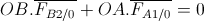
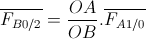

Système de compression du bouchon
Problématique
Il faut comprimer le bouchon en caoutchouc rigide pour retenir la fusée quand elle est sous pression et renforcer l’étanchéité entre l’intérieur de la fusée et l’extérieur.
Solution
Réalisation
Un vérin actionne un bras de levier en A. Celui-ci tire la tige filetée vers le bas en B pour compresser le bouchon coincé entre les écrous et la plaque.
Schéma cinématique
Les raisons suivantes nous ont poussé à choisir cette solution :
- Le vérin ne pouvait pas être proche de la fusée pour laisser passer les ailerons et le tube de guidage, d’où le choix de passer par un bras de levier.
- Le bouchon est en caoutchouc rigide, le bras de levier permet de décupler la force du vérin pour permettre une meilleure compression :
Le système statique, la somme des moments des forces par rapport à O est nulle :
 soit 
Ici, (OA/OB)=4, la force exercée par le bras de levier sur la tige filetée 2 (et donc le bouchon) est quatre fois plus importante que celle exercée par le vérin sur le bras de levier. Nous ne pouvions pas nous permettre de compresser que partiellement le bouchon puisque c’est le système de retenue de la fusée, où la pression peut monter à 10 bars.
Réalisation
Les liaisons ponctuelles entre le bras de levier (en vert) et les deux tiges sont réalisées par la forme de la pièce verte et de petites rondelles.
Note : Le bras de levier, pièce principale de ce système était prévu en acier. Faute de moyens la pièce a été réalisée par prototypage. La pièce se plie légèrement quand le vérin est actionné mais sans incidence dans la réalisation de la fonction technique.
Simulation solidworks
Voici une simulation de l'activation du système de compression (sous solidworks) :
Fonctionnement sur maquette
Photo du bras de compression lorsque la tige du vérin est active :
Photo du bras de compression lorsque le vérin se relâche : (la fusée va partir...)